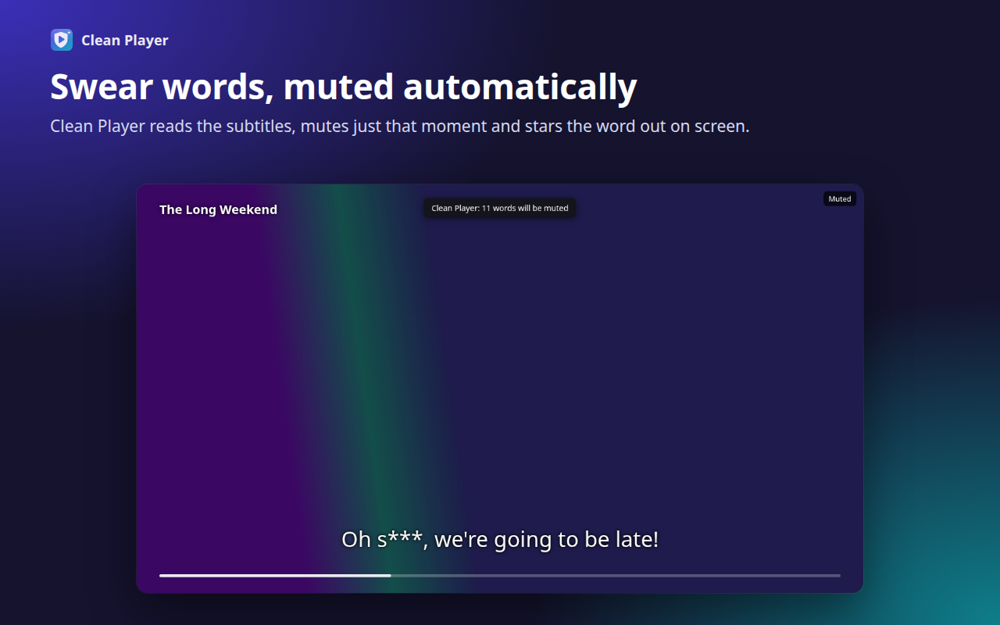
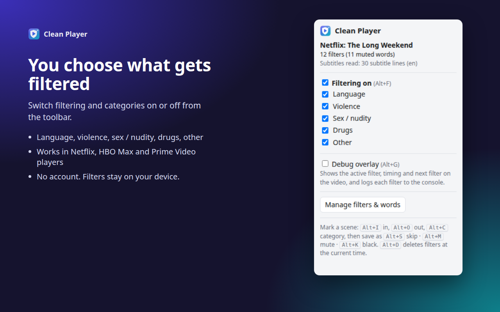
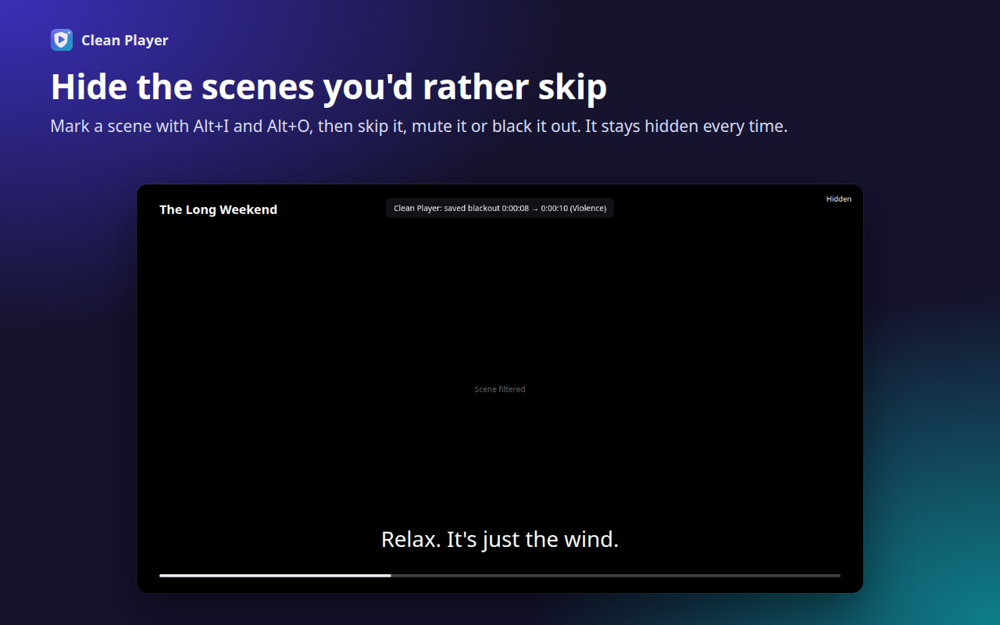

Clean Player for Streaming
Mutes swear words and hides scenes you choose, right inside the Netflix, HBO Max and Prime Video players you already use.
Free. No account. Your filters never leave your browser.
See it in action

What it does
Automatic muting
Reads the title's subtitles, finds words from your list and mutes the audio only while they are spoken.
Mark your own scenes
Alt+I marks the start, Alt+O the end, then skip, mute or black out. Remembered per title.
Categories
Turn language, violence, sex/nudity, drugs and other filters on or off at any time.
Private by design
No account, no servers, no tracking. Word list and filters live only in your browser.


Install
Clean Player for Streaming is on its way to the Chrome Web Store. This page will link to it as soon as it is published.
- Works in Chrome and other Chromium browsers (version 111 or later).
- You need your own Netflix, HBO Max or Prime Video subscription.
- For automatic muting, turn English subtitles on once (Netflix), keep them on the first time you watch (HBO Max), or do nothing (Prime Video).
Good to know
- Picture filtering covers the video with a black screen, because protected video can't be blurred or analysed.
- Automatic detection covers language only. Nudity and violence filters come from scenes you mark or filter files you import.
- Press Alt+G while watching to show a debug overlay with the active filter and timing.
Support
Questions, bugs or a service that stopped working: info@xo.tools